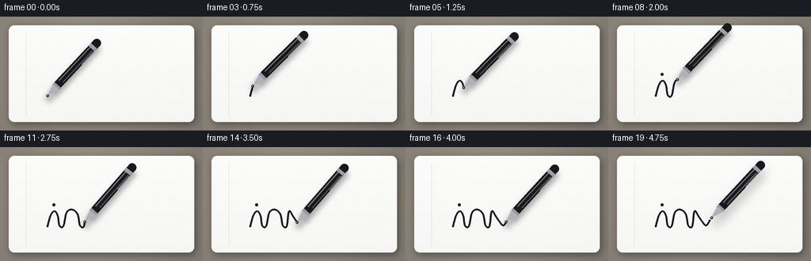
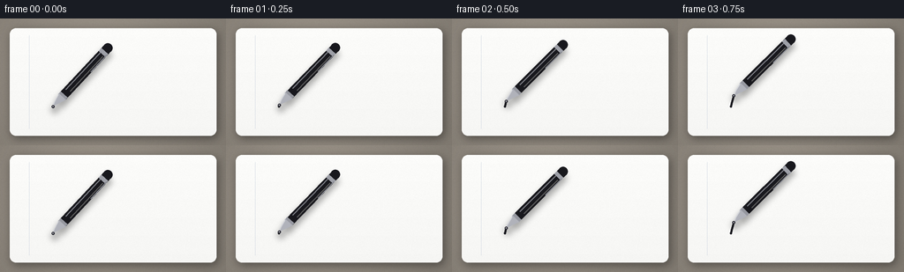

CODING AGENTS AS PIXEL WORLD MODELS
traex/Seed-2.1-Pro-0915 · phygen_035
点击播放 · 原生 RGB 像素
此结果可播放，但该运行尚未通过最终提交审核。页面展示不代表评测通过。
逐轮保存的候选
回放视频、检查图与代码变化。
每份候选均可单独播放。实际图片检查记录在下方工具轨迹中。
候选 01播放与检查图
点击播放 · 原生 RGB 像素


展开代码变化
--- 上一保存版本
+++ 本次保存版本
@@ -0,0 +1,263 @@
+"""Text-to-video: a black ballpoint pen writing on a smooth white notebook page.
+
+Renders 20 RGB frames (256x144, 4 fps) using only numpy + PIL. The scene is a
+top-down flat lay: desk, paper page with soft shading, a black pen whose
+ballpoint follows a cursive ink path, and ink that appears stroke by stroke.
+Everything is supersampled 3x then downsampled with LANCZOS for smooth edges.
+"""
+import math
+import os
+
+import numpy as np
+from PIL import Image, ImageDraw, ImageFilter
+
+import artifact_io
+
+W, H, N, FPS = 256, 144, 20, 4.0
+SS = 3 # supersampling factor
+SW, SH = W * SS, H * SS
+CASE_DIR = os.path.dirname(os.path.abspath(__file__))
+
+
+# --------------------------------------------------------------------------
+# Geometry helpers
+# --------------------------------------------------------------------------
+def catmull_rom(points, samples_per_seg=28):
+ """Smooth spline through the given control points (open curve)."""
+ pts = np.asarray(points, dtype=float)
+ padded = np.vstack([pts[0], pts, pts[-1]])
+ out = []
+ for i in range(len(pts) - 1):
+ p0, p1, p2, p3 = padded[i:i + 4]
+ for t in np.linspace(0.0, 1.0, samples_per_seg, endpoint=False):
+ t2, t3 = t * t, t * t * t
+ out.append(0.5 * (
+ 2 * p1
+ + (-p0 + p2) * t
+ + (2 * p0 - 5 * p1 + 4 * p2 - p3) * t2
+ + (-p0 + 3 * p1 - 3 * p2 + p3) * t3
+ ))
+ out.append(pts[-1])
+ curve = np.asarray(out)
+ seg = np.diff(curve, axis=0)
+ lengths = np.r_[0.0, np.cumsum(np.hypot(seg[:, 0], seg[:, 1]))]
+ return curve, lengths
+
+
+def point_at_fraction(curve, lengths, frac):
+ """Point (and tangent) at arc-length fraction frac in [0, 1]."""
+ target = float(np.clip(frac, 0.0, 1.0)) * lengths[-1]
+ idx = int(np.searchsorted(lengths, target, side="right") - 1)
+ idx = max(0, min(idx, len(curve) - 2))
+ span = lengths[idx + 1] - lengths[idx]
+ t = 0.0 if span == 0 else (target - lengths[idx]) / span
+ p = curve[idx] * (1 - t) + curve[idx + 1] * t
+ tangent = curve[idx + 1] - curve[idx]
+ norm = math.hypot(tangent[0], tangent[1]) or 1.0
+ return p, tangent / norm
+
+
+def smoothstep(x):
+ x = float(np.clip(x, 0.0, 1.0))
+ return x * x * (3 - 2 * x)
+
+
+# --------------------------------------------------------------------------
+# Static background: desk, page, soft shading, paper grain
+# --------------------------------------------------------------------------
+def build_background():
+ scale = SS
+ desk = Image.new("RGB", (SW, SH), (158, 150, 139))
+
+ # Faint large-scale light falloff on the desk.
+ yy, xx = np.mgrid[0:SH, 0:SW]
+ cx, cy = SW * 0.42, SH * 0.38
+ rr = np.sqrt((xx - cx) ** 2 + (yy - cy) ** 2) / (SW * 0.75)
+ shade = np.clip(1.0 - rr * 0.22, 0.78, 1.0)
+ arr = np.asarray(desk).astype(float) * shade[..., None]
+ desk = Image.fromarray(arr.astype(np.uint8))
+
+ margin = 11 * scale
+ page_box = [margin, margin, SW - margin, SH - margin]
+ radius = 7 * scale
+
+ # Soft page drop shadow.
+ shadow = Image.new("RGBA", (SW, SH), (0, 0, 0, 0))
+ sdraw = ImageDraw.Draw(shadow)
+ sdraw.rounded_rectangle(
+ [page_box[0] + 2 * scale, page_box[1] + 3 * scale,
+ page_box[2] + 2 * scale, page_box[3] + 3 * scale],
+ radius=radius, fill=(0, 0, 0, 110),
+ )
+ shadow = shadow.filter(ImageFilter.GaussianBlur(radius=5 * scale))
+ desk = Image.alpha_composite(desk.convert("RGBA"), shadow)
+
+ # White page with a barely-there vertical gradient.
+ page = Image.new("RGBA", (SW, SH), (0, 0, 0, 0))
+ pdraw = ImageDraw.Draw(page)
+ pdraw.rounded_rectangle(page_box, radius=radius, fill=(253, 253, 251, 255))
+ grad = np.linspace(0, 7, SH, dtype=float)[:, None]
+ parr = np.asarray(page).astype(float)
+ mask = parr[..., 3] > 0
+ for c in range(3):
+ parr[..., c] = np.where(mask, np.clip(parr[..., c] - grad, 0, 255), parr[..., c])
+ page = Image.fromarray(parr.astype(np.uint8))
+ desk = Image.alpha_composite(desk, page)
+ draw = ImageDraw.Draw(desk, "RGBA")
+
+ # Faint notebook margin line.
+ mx = 33 * scale
+ draw.line([(mx, page_box[1] + 8 * scale), (mx, page_box[3] - 8 * scale)],
+ fill=(196, 205, 219, 90), width=max(1, scale // 2))
+
+ # Subtle paper grain (deterministic).
+ rng = np.random.default_rng(7)
+ grain = rng.normal(0, 2.2, (SH, SW, 1))
+ garr = np.asarray(desk).astype(float)
+ garr[..., :3] = np.clip(garr[..., :3] + grain, 0, 255)
+ return Image.fromarray(garr.astype(np.uint8), "RGBA")
+
+
+# --------------------------------------------------------------------------
+# Ink layer: partial cursive word following the spline
+# --------------------------------------------------------------------------
+# Control points for a connected cursive "ink" trace (1x pixel coordinates).
+WORD_POINTS = [
+ (60, 100), (64, 86), (69, 81), (73, 87), (75, 99), # i
+ (80, 100), (84, 83), (91, 79), (98, 85), (101, 99), # n
+ (106, 100), (109, 81), (115, 89), (123, 99), (128, 93) # k + flick
+]
+I_DOT = (68, 73)
+
+CURVE, LENGTHS = catmull_rom(WORD_POINTS)
+
+
+def draw_ink(frac):
+ layer = Image.new("RGBA", (SW, SH), (0, 0, 0, 0))
+ draw = ImageDraw.Draw(layer)
+ target = float(np.clip(frac, 0.0, 1.0)) * LENGTHS[-1]
+ idx = int(np.searchsorted(LENGTHS, target, side="right"))
+ idx = max(1, min(idx, len(CURVE) - 1))
+ pts = [(p[0] * SS, p[1] * SS) for p in CURVE[:idx + 1]]
+ if len(pts) >= 2:
+ draw.line(pts, fill=(26, 26, 32, 255),
+ width=max(2, int(round(2.3 * SS))), joint="curve")
+ # Round start cap so the beginning never looks flat.
+ draw.ellipse([pts[0][0] - 1.15 * SS, pts[0][1] - 1.15 * SS,
+ pts[0][0] + 1.15 * SS, pts[0][1] + 1.15 * SS],
+ fill=(26, 26, 32, 255))
+ # End cap at the exact partial position.
+ end_p, _ = point_at_fraction(CURVE, LENGTHS, frac)
+ ex, ey = end_p * SS
+ draw.ellipse([ex - 1.15 * SS, ey - 1.15 * SS,
+ ex + 1.15 * SS, ey + 1.15 * SS],
+ fill=(26, 26, 32, 255))
+ # Tittle of the "i", added shortly after the stem is written.
+ if frac > 0.34:
+ dx, dy = I_DOT[0] * SS, I_DOT[1] * SS
+ r = 1.7 * SS
+ draw.ellipse([dx - r, dy - r, dx + r, dy + r], fill=(26, 26, 32, 255))
+ return layer
+
+
+# --------------------------------------------------------------------------
+# Pen: oriented ballpoint (shadow, metal cone, black barrel, bands, clip)
+# --------------------------------------------------------------------------
+def draw_pen(base, tip_1x, angle_deg, lift_1x):
+ tip = np.array([tip_1x[0] * SS, tip_1x[1] * SS], dtype=float)
+ lift = np.array([lift_1x[0] * SS, lift_1x[1] * SS], dtype=float)
+ tip = tip + lift
+ a = math.radians(angle_deg)
+ v = np.array([math.cos(a), math.sin(a)]) # tip -> back of pen
+ q = np.array([-math.sin(a), math.cos(a)]) # perpendicular
+
+ def at(u, off=0.0):
+ return tuple(tip + v * (u * SS) + q * (off * SS))
+
+ def w(width_1x):
+ return max(1, int(round(width_1x * SS)))
+
+ # Contact shadow, softer and more offset while the pen is lifted.
+ shadow = Image.new("RGBA", (SW, SH), (0, 0, 0, 0))
+ sd = ImageDraw.Draw(shadow)
+ lift_amount = math.hypot(*lift_1x)
+ so = np.array([2.2 + lift_amount * 0.5, 3.0 + lift_amount * 0.7]) * SS
+ sd.line([tuple(tip + v * (6 * SS) + so), tuple(tip + v * (90 * SS) + so)],
+ fill=(0, 0, 0, 80 if lift_amount < 0.1 else 55),
+ width=w(12.5))
+ sd.ellipse([tip[0] - 5 * SS + so[0], tip[1] - 5 * SS + so[1],
+ tip[0] + 5 * SS + so[0], tip[1] + 5 * SS + so[1]],
+ fill=(0, 0, 0, 70 if lift_amount < 0.1 else 45))
+ blur = 3.2 * SS + lift_amount * SS * 0.6
+ shadow = shadow.filter(ImageFilter.GaussianBlur(radius=blur))
+ base = Image.alpha_composite(base, shadow)
+ layer = Image.new("RGBA", (SW, SH), (0, 0, 0, 0))
+ d = ImageDraw.Draw(layer)
+
+ # Black barrel with rounded cap end.
+ d.line([at(15), at(91)], fill=(24, 24, 29, 255), width=w(10.5))
+ d.ellipse([at(91)[0] - w(5.2), at(91)[1] - w(5.2),
+ at(91)[0] + w(5.2), at(91)[1] + w(5.2)], fill=(24, 24, 29, 255))
+
+ # Longitudinal specular highlight on the barrel.
+ d.line([at(24, -2.4), at(84, -2.4)], fill=(104, 106, 116, 200), width=w(1.5))
+ d.line([at(26, 2.6), at(80, 2.6)], fill=(0, 0, 0, 120), width=w(1.1))
+
+ # Silver cap band and pocket clip.
+ d.line([at(82), at(86.5)], fill=(158, 160, 168, 255), width=w(10.8))
+ d.line([at(58, 4.6), at(84, 4.6)], fill=(132, 134, 142, 255), width=w(1.7))
+
+ # Grip ring and metal cone nib.
+ d.line([at(14.5), at(19)], fill=(150, 152, 160, 255), width=w(10.6))
+ cone = [at(0.5), at(15.5, -5.4), at(15.5, 5.4)]
+ d.polygon(cone, fill=(176, 178, 186, 255))
+ d.line([at(2, -1.6), at(14, -4.6)], fill=(210, 212, 218, 220), width=w(1.0))
+
+ # Ballpoint and its glint.
+ bx, by = at(0)
+ d.ellipse([bx - w(1.7), by - w(1.7), bx + w(1.7), by + w(1.7)],
+ fill=(44, 44, 52, 255))
+ d.ellipse([bx - w(0.55), by - w(0.55), bx + w(0.35), by + w(0.35)],
+ fill=(225, 226, 232, 230))
+
+ base = Image.alpha_composite(base, layer)
+ return base
+
+
+# --------------------------------------------------------------------------
+# Frame assembly
+# --------------------------------------------------------------------------
+def main():
+ background = build_background()
+ frames = []
+ base_angle = -47.0
+
+ for i in range(N):
+ t = i / (N - 1)
+ # Writing finishes at t = 0.9; the final frame lifts the pen.
+ progress = smoothstep(t / 0.9) if t <= 0.9 else 1.0
+
+ frame = Image.alpha_composite(background, draw_ink(progress))
+
+ tip, _tangent = point_at_fraction(CURVE, LENGTHS, progress)
+ # Natural small wrist rotation and micro-jitter while moving.
+ moving = 1.0 if t < 0.9 else 0.0
+ angle = base_angle + 2.2 * math.sin(t * math.pi * 2.2) * moving
+ angle += 0.5 * math.sin(t * 17.0) * moving
+
+ lift = np.array([0.0, 0.0])
+ if t > 0.9: # pen lifts off after the word is complete
+ k = (t - 0.9) / 0.1
+ lift = np.array([2.5, -3.5]) * smoothstep(k)
+
+ frame = draw_pen(frame, tip, angle, lift)
+ rgb = frame.convert("RGB").resize((W, H), Image.Resampling.LANCZOS)
+ frames.append(np.asarray(rgb, dtype=np.uint8))
+
+ frames = np.stack(frames, axis=0)
+ artifact_io.save(frames, CASE_DIR)
+ print(f"Saved {frames.shape[0]} frames at {W}x{H}, {FPS} fps -> {CASE_DIR}")
+
+
+if __name__ == "__main__":
+ main()
可观测工具轨迹
实际执行的命令与返回图片。
命令 1exit 0
/bin/bash -lc 'cat prompt.txt; echo "---"; cat GENERATION_RULES.md; echo "---"; cat task_spec.json; echo "---"; ls -la'
命令 2exit 0
/bin/bash -lc 'cat artifact_io.py'
命令 3exit 0
/bin/bash -lc 'python -c "import PIL, numpy; print(PIL.__version__, numpy.__version__)"'
命令 4exit 0
/bin/bash -lc 'cd "$(pwd)" && time python generate.py && ls -la frames | head -6 && ls -la pixels.npz inspection.png index.html'
保存候选 1 份；完成命令 4 次；可验证图片返回 0 张。原始 API 响应与完整日志保留在本地。